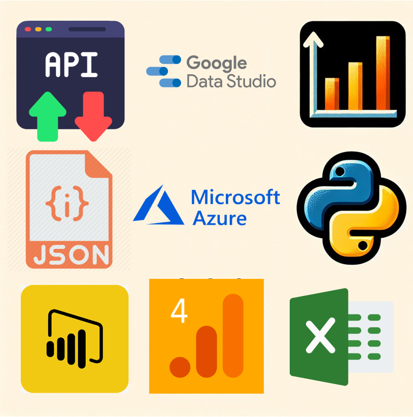

Giovani Pase do Prado


Sou Engenheiro Mecânico de formação com uma trajetória consolidada em análise de dados, automação de processos e inteligência de negócios. Minha experiência abrange desde a criação de dashboards e modelagem de dados até a implementação de automações para otimizar processos e melhorar a tomada de decisões.
Tenho forte atuação em Power BI, SQL, DAX, Python e ETL, além de experiência com mineração de dados, web scraping e análise preditiva. Trabalho com automação de tarefas utilizando RPA e Selenium, integrando bancos de dados e otimizando fluxos operacionais para diferentes segmentos.
Além disso, minha vivência na gestão de projetos e metodologias ágeis me permite atuar de forma estratégica no desenvolvimento de soluções para análise de mercado, definição de metas e melhoria contínua de processos.
Atualmente, ofereço serviços especializados para transformar dados em insights valiosos, apoiando a tomada de decisões e impulsionando a eficiência operacional.
Também possuo experiência com as ferramentas Looker Studio, Seaborn(Biblioteca Python para criação de Dashboars) GA4, Microsoft Azure e Excel.

Email: giovanipp@gmail.com
GitHub: github.com/giovanipp
LinkedIn: linkedin.com/in/seuperfil